神经网络篇
深度前馈网络 (多层感知机)
神经网络原理
相关笔记：《机器学习原理与实践》。
对于第 \ell 层，输入为 a^{[\ell-1]}。前向过程先做仿射变换，再逐元素应用激活函数：
对非输出层使用链式法则；\odot 表示逐元素相乘。下面是对单个样本的梯度：
Pytorch基础
pytorch张量计算
张量(Tensor): Pytorch基本数据类型，类似于ndarrays。不同于向量和矩阵只有一维和两维，张量可以有任意多个维度。在机器学习和深度学习中，张量是一种重要的数据结构，用于表示输入和输出数据。
标量 - 零维张量
向量 - 一维张量
二维矩阵 - 二维张量
多维矩阵 - 多维张量
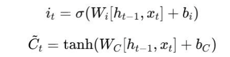
张量初始化
- 直接定义
- 生成全0、全1、服从各种分布的随机
- 从array转换
x = torch.tensor([[1, 2]]) # torch.Size([1, 2])
y = torch.tensor([[1], [2]]) # torch.Size([2, 1])# 生成全零的张量
torch.zeros((3, 4))
'''
tensor([[0., 0., 0., 0.],
[0., 0., 0., 0.],
[0., 0., 0., 0.]])
'''
# 生成全1的张量
torch.ones((3, 4))
'''
tensor([[1., 1., 1., 1.],
[1., 1., 1., 1.],
[1., 1., 1., 1.]])
'''# 三行四列的张量对象，每个元素为 0 到 9 的随机整数（上界 10 不包含）
torch.randint(low=0, high=10, size=(3,4))
# 三行四列的张量对象，每个元素为0-1的随机浮点值
torch.rand(3, 4)
# 三行四列的张量对象，每个对象服从正态分布
torch.randn((3, 4))
# 直接用torch.tensor(array)转化成张量
x = np.array([[1, 2, 3],
[4, 5, 6]])
torch.tensor(x)张量运算
1. 加减乘除
tensor = torch.tensor([[1, 2, 3, 4],
[5, 6, 7, 8]])
print(tensor.add(1))
print(tensor.subtract(5))
print(tensor.div(10))
print(tensor.multiply(10))
'''
tensor([[2, 3, 4, 5],
[6, 7, 8, 9]])
tensor([[-4, -3, -2, -1],
[ 0, 1, 2, 3]])
tensor([[0.1000, 0.2000, 0.3000, 0.4000],
[0.5000, 0.6000, 0.7000, 0.8000]])
tensor([[10, 20, 30, 40],
[50, 60, 70, 80]])
'''2. 张量整形（view方法、squeeze unsqueeze方法、None索引方法）
tensor = torch.tensor([[1, 2, 3, 4],
[5, 6, 7, 8]]) # torch.Size([2, 4])
tensor3d = tensor.view(1, 2, 4) # torch.Size([1, 2, 4])tensor3d = tensor.unsqueeze(0) # 在axis=0插入一个新维度
tensor_back = tensor3d.squeeze(0) # 删除axis=0的维度
z1, z2, z3 = tensorX[None], tensorX[:, None], tensor[:,:,None]
# 分别在axis为0,1,2插入了一个维度3. 张量乘法（matmul @ 和矩阵乘法类似）
tensorA = torch.rand((3, 4))
tensorB = torch.rand((4, 3))
torch.matmul(tensorA, tensorB)4. 张量连接（cat方法）
tensorC = torch.randn(10,10,10)
tensorcat0 = torch.cat([tensorC, tensorC], axis=0) # torch.Size([20, 10, 10])5. max和min
val = tensorD.max() # 提取张量的最大值
valm, argm = tensorD.max(dim=0) # 如果指定了dim, 则返回最大值与位置索引
'''
tensor(24)
tensor([20, 21, 22, 23, 24])
tensor([4, 4, 4, 4, 4])
'''6. 张量重排（permute方法）
tensorO = torch.randn(10, 20, 30)
tensorT = tensorO.permute(2, 0, 1)
print(f"tensorO.shape {tensorO.shape}; tensorT.shape {tensorT.shape}")
'''
tensorO.shape torch.Size([10, 20, 30]); tensorT.shape torch.Size([30, 10, 20])
'''总结：基本上我们可以使用与Numpy完全相同的语法来执行张量计算
张量对象的自动梯度计算
在定义一个张量对象的时候，可以指定它需要计算梯度
x = torch.tensor([
[2., 1.],
[-2., -1.]], requires_grad=True) # 只有浮点或复数张量才能启用梯度跟踪# 定义计算的函数
output = x.pow(2).sum()
output.backward() # 由于output是由x计算得到的标量，调用.backward会自动计算output对x的梯度
x.grad # x的梯度矩阵
'''
tensor([[ 4., 2.],
[-4., -2.]])
'''张量相对NumPy数组的优势
张量可以使用GPU进行计算
在计算最佳权重值时，会对每个权重进行微量修改，并观察它对降低损失值的影响。需要注意的是，一个权重更新的损失计算不影响同一迭代中其他权重更新的损失计算。因此，每个权重更新可以由不同的核心并行进行，而非顺序更新权重，在这种情况下，GPU 与 CPU 相比更具优势，因为 GPU 通常包含数千个核
使用Pytorch构建MLP网络
1. 定义数据
# 将输入列表转换为张量对象
X = torch.tensor(x).float()
Y = torch.tensor(y).float()
# 将X, Y注册到device
device = 'cuda' if torch.cuda.is_available() else 'cpu'
X = X.to(device)
Y = Y.to(device)2. 定义神经网络类
class MyNeuralNet(nn.Module):
def __init__(self):
super().__init__()
self.hidden_layer = nn.Linear(2, 8) # 全连接层
self.activation = nn.ReLU() # ReLU激活函数
self.output_layer = nn.Linear(8, 1) # 全连接层
def forward(self, x):
'''前向传播方法，把所有神经网络的组件都连接到一起
必须使用forward作为前向传播函数名'''
x = self.hidden_layer(x)
x = self.activation(x)
x = self.output_layer(x)
return x这里之所以必须使用forward方法，是因为nn.Module内部实现了一个__call__方法：
def __call__(self, *args, **kwargs):
return self.forward(*args, **kwargs)所以在写
model = MyNeuralNet()
y = model(x)的时候，Python会寻找__call__方法，从而实现y = model.forward(x)
3. 实例化与访问参数（初始化参数，每次都是随机的）
net = MyNeuralNet()
net.hidden_layer.weight
'''
Parameter containing:
tensor([[-0.0044, -0.0182],
[ 0.4021, 0.2870],
[ 0.6419, 0.2974],
[ 0.3441, 0.0716],
[-0.2929, 0.0159],
[ 0.1147, -0.6256],
[ 0.3538, -0.2163],
[-0.1968, 0.5575]], requires_grad=True)
'''
net.parameters() # 访问所有参数4. 定义损失函数、前向传播、计算损失
loss_func = nn.MSELoss() # 定义损失函数
_Y = net(X) # 这步是进行前向传播，得到预测值
loss = loss_func(_Y, Y) # 计算损失5. 定义优化器，输入为神经网络的参数（权重和偏置）与学习率，以随机梯度下降（SGD）为例
# 定义优化器
from torch.optim import SGD
opt = SGD(net.parameters, lr=0.001)6. 训练epoch
hist_loss = []
for _ in range(50):
opt.zero_grad() # 把模型所有参数的梯度清零
loss_value = loss_func(net(X), Y)
loss_value.backward() # 执行反向传播
opt.step() #
hist_loss.append(loss_value.item())7. 模型测试
val_x = torch.tensor([[10, 11]]).float().to(device)
net(val_x)神经网络数据加载
批大小（batch size）是指计算损失值或者更新权重时考虑的数据样本数。
- 如果数据集有数百万个样本，一次将所有数据点用于更新权重并不是最佳选择
- 批大小用于指定抽样样本数，对数据进行抽样
- 定义Mydataset继承自Dataset, 接收一个batch的x, y, 指定固定方法__len__和__getitem__, 之后将实例对象传入DataLoader
# 创建数据集类MyDataset
class MyDataSet(Dataset):
'''在MyDataSet类中，储存数据信息以便可以将一个batch数据点捆绑在一起，
并通过一次前向和反向传播更新权重'''
def __init__(self, x, y):
'''该方法接受输入和输出，并将它们转化为torch浮点对象'''
self.x = x.clone().detach()
self.y = y.clone().detach()
def __len__(self):
'''指定输入数据集的长度'''
return len(self.x)
def __getitem__(self, ix):
'''获取指定的数据样本'''
return self.x[ix], self.y[ix]
ds = MyDataSet(X, Y)
# 通过DataLoader传递数据集实例，从原始输入输出张量对象获取batch_size个数据点
dl = DataLoader(ds, batch_size=2, shuffle=True)
'''训练过程， MLP类略'''
hist_loss = []
for _ in range(50):
for data in dl:
x, y = data
opt.zero_grad()
loss_value = loss_func(net(x), y)
loss_value.backward()
opt.step()
hist_loss.append(loss_value.item())例如：epoch为50，把样本分割成两个batch, 那就要iter100次
使用Sequential类定义模型架构
torch.nn.Sequential 是一个“按顺序堆层”的容器，通过Sequential定义网络层和激活函数，它可以按定义顺序执行forward。简化了过程
- 如果模型只是线性的网络结构，可以写Sequential;
- 如果存在分支或跳连，就必须自己定义类，写forward
model = nn.Sequential(
nn.Linear(2, 8),
nn.ReLU(),
nn.Linear(8, 1)
).to(device)使用torchsummary.summary查看网络结构
from torchsummary import summary
summary(model, (2,))----------------------------------------------------------------
Layer (type) Output Shape Param #
================================================================
Linear-1 [-1, 8] 24
ReLU-2 [-1, 8] 0
Linear-3 [-1, 1] 9
================================================================
Total params: 33
Trainable params: 33
Non-trainable params: 0
----------------------------------------------------------------
Input size (MB): 0.00
Forward/backward pass size (MB): 0.00
Params size (MB): 0.00
Estimated Total Size (MB): 0.00
----------------------------------------------------------------模型保存与加载
model.state_dict()用于把模型的所有参数和持久化的缓冲区打包成一个字典，方便保存和加载
state = model.state_dict()
'''例如：2-8-1的网络
hidden_layer.weight torch.Size([8, 2])
hidden_layer.bias torch.Size([8])
output_layer.weight torch.Size([1, 8])
output_layer.bias torch.Size([1])
'''保存与加载
torch.save(model.state_dict(), "model.pth")
model = MyNeuralNet() # 模型结构必须一致
model.load_state_dict(torch.load("model.pth"))state_dict 只存参数，不存模型结构。所以恢复的时候要你自己定义模型类。
如果你在 GPU 上训练，但想在 CPU 上加载，要加 map_location=torch.device('cpu') 。
里面既有可训练参数（requires_grad=True ），也有 buffer（比如 BatchNorm 的统计量），都能保存下来。
深度学习工程策略
激活函数
激活函数本质上是给神经元“加非线性”（如果整个神经网络都是线性的，等价于一个线性网络）
Sigmoid
sigmoid的导数
- 优点：平滑、易于求导
- Sigmoid 饱和时局部导数接近 0，且局部导数最大为 1/4。整层梯度还要乘权重矩阵，不能认为梯度每层固定缩小到四分之一。
Tanh
tanh的导数：
- Tanh 的输出范围为 (-1,1)，以 0 为中心；这在一些模型中有利于优化，但不是收敛更快的保证。
- 输入绝对值很大时，Tanh 也会饱和，导数趋近 0。
ReLU
修正线性单元（Rectified Linear Unit）
特点：
- 如果某个神经元大于0，导数为1，梯度可以原封不动传递回来；
- 负半轴导数为 0；如果一个单元对训练样本长期处于负半轴，它可能失活。一次出现负输入并不意味着永久失活。
- ReLU 的正半轴不饱和，可以缓解部分梯度衰减，但不能保证深层网络不出现梯度消失。
- 其他变体：Leaky ReLU\ELU（不让负区间直接归零）

损失函数
本节待补。
Fashion-MNIST 数据集实战
1. 导入数据
- data_folder为数据集保存和读取的路径；当download为True时，程序会从网络上下载数据集并保存到文件夹里，为False时会直接尝试从本地读取文件。train表示是否加载6万张训练集，如果为False，则只加载测试集。
from torch.utils.data import Dataset, DataLoader, random_split
from torchvision import datasets
import torch
import torch.nn as nn
import numpy as np
import matplotlib as plt
data_folder = './data/FMNIST'
fmnist = datasets.FashionMNIST(data_folder, download=False, train=True)
tr_images = fmnist.data
tr_targets = fmnist.targets2. 绘制随机图像样本
# 绘制随机图像样本
import matplotlib.pyplot as plt
import numpy as np
R, C = len(tr_targets.unique()), 10
fig, ax = plt.subplots(R, C, figsize=(10,10))
for label_class, plot_row in enumerate(ax):
label_x_rows = np.where(tr_targets == label_class)[0] # 类别*的索引标签
for plot_cell in plot_row:
plot_cell.grid(False)
plot_cell.axis(False)
ix = np.random.choice(label_x_rows)
x, y = tr_images[ix], tr_targets[ix]
plot_cell.imshow(x)3. 创建数据集并定义数据获取函数
- view是张量重塑操作，原本
x是形状[N, 1, 28, 28]（N 张图片），用了x.view(-1, 28*28)后变成[N, 784]，把每张 28×28 的图片拉平成一维向量。-1表示自动推算这一维的大小（即 N）
class FMNISTDataset(Dataset):
def __init__(self, x, y):
x = x.float()
x = x.view(-1, 28*28)
self.x, self.y = x, y
def __getitem__(self, ix):
x, y = self.x[ix], self.y[ix]
return x, y
def __len__(self):
return len(self.x)
# 在官方训练集内固定切分；官方测试集留待最终评估。
def get_data():
full = FMNISTDataset(tr_images, tr_targets)
train, val = random_split(full, [50_000, 10_000],
generator=torch.Generator().manual_seed(42))
return (DataLoader(train, batch_size=32, shuffle=True),
DataLoader(val, batch_size=32, shuffle=False))4. 定义模型、训练过程、精确度、损失
- 多分类可用
nn.CrossEntropyLoss；模型输出未归一化的 logits，直接与类别索引一起传给损失函数，无需先做 softmax。
from torch.optim import SGD
def get_model():
model = nn.Sequential(
nn.Linear(28*28, 1000),
nn.ReLU(),
nn.Linear(1000, 10)
)
lossFunc = nn.CrossEntropyLoss()
optimizer = SGD(model.parameters(), lr=0.001)
return model, lossFunc, optimizer
# 分批训练
def train_batch(x, y, model, optimizer, lossFunc):
model.train()
optimizer.zero_grad()
_y = model(x) # shape: (batch_size, classes)
loss = lossFunc(_y, y)
loss.backward()
optimizer.step()
return loss.item()5. 定义模型评估组件（精确度、损失）
@torch.no_grad()关闭梯度记录，不会改变模型的训练或评估模式。model.eval()的作用是把模型切换到“评估模式”。这会影响像 Dropout、BatchNorm 这种层的行为——它们在训练时会随机或动态更新，但在验证/测试时要固定结果，否则评估会不稳定。torch.max(x)返回全局最大值；x.max(dim=-1)返回最后一维的最大值和索引。分类 logits 的最后一维对应类别。
@torch.no_grad()
def accuracy(x, y, model):
model.eval()
_y = model(x) # 为每一个样本的10个类别给出预测分数
max_values, argmaxes = _y.max(-1) # 分数最大的类别
is_correct = argmaxes == y # 预测对了吗？
return is_correct.cpu().tolist()
@torch.no_grad()
def val_loss(x, y, model, lossFunc):
model.eval()
_y = model(x)
val_loss = lossFunc(_y, y)
return val_loss.item()6. 进行训练
- 每轮记录按样本数加权的训练损失、验证损失和验证集准确率。验证集与训练集不重叠，不能把训练集准确率当作泛化结果。
trn_dl, val_dl = get_data()
model, lossFunc, optimizer = get_model()
losses, val_losses, accuracies = [], [], []
for epoch in range(50):
train_loss_total = train_count = 0
for x, y in trn_dl:
loss = train_batch(x, y, model, optimizer, lossFunc)
train_loss_total += loss * y.numel()
train_count += y.numel()
model.eval()
val_loss_total = val_correct = val_count = 0
with torch.no_grad():
for x, y in val_dl:
logits = model(x)
val_loss_total += lossFunc(logits, y).item() * y.numel()
val_correct += (logits.argmax(dim=1) == y).sum().item()
val_count += y.numel()
losses.append(train_loss_total / train_count)
val_losses.append(val_loss_total / val_count)
accuracies.append(val_correct / val_count)7. 查看结果
Loss
Accuracy


学习率
本节待补。
过拟合与正则化
批归一化
本节待补。
优化器
优化器的本质是利用数值方法逼近最优参数（最小化Loss）
序列建模
循环神经网络（RNN）和长短期记忆网络（LSTM）是两种常见的处理序列数据的架构，RNN是一种具有循环连接的神经网络，它使其在处理序列数据时可以考虑上下文信息。但是当序列较长时，过去的信息难以正确传递到当前步。LSTM引入门控机制来有效处理长期依赖关系。
常见的序列模型：
- ARIMA
- RNN
- LSTM
- GRU
循环神经网络
RNN 的隐藏状态依赖当前输入和上一个时间步的隐藏状态。普通前馈层可写成 h=f(W_x x+b)；循环层还保留从 h_{t-1} 到 h_t 的连接：
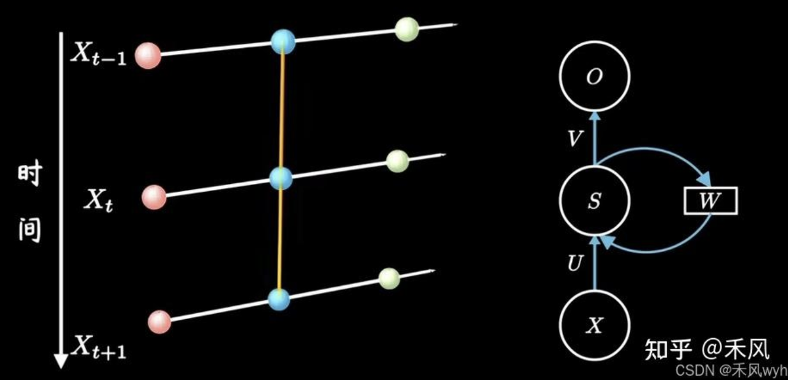
- RNN的训练过程跟普通的神经网络一样，也是采用反向传播梯度下降算法，只不过在计算隐层的时候需要引入之前的数据。
- 由于时序上的层级结构，使得RNN在输入输出关系上具备了更大的灵活性，能够解决不同的问题。结构可以为：
- 1 to N：输入一张图片，输出一段话
- N to 1：输入可以是一段话，输出可以是一种情感类别的判定或者是一张图片。
- N to N：这种RNN可以用来生成文章、诗歌甚至代码。
- N to M: 也被称Encoder-Decoder模型/Seq2Seq模型， 先将输入数据编码成上下文向量，然后通过它来输出预测的序列。这种RNN在机器翻译、文本摘要、阅读理解、对话生成等很多领域都有着极为广泛的应用。
长短期记忆网络
LSTM 在 RNN 的基础上引入门控与细胞状态。细胞状态提供了一条可以跨越多个时间步的梯度路径，有助于缓解梯度消失，但不能保证梯度始终不衰减。
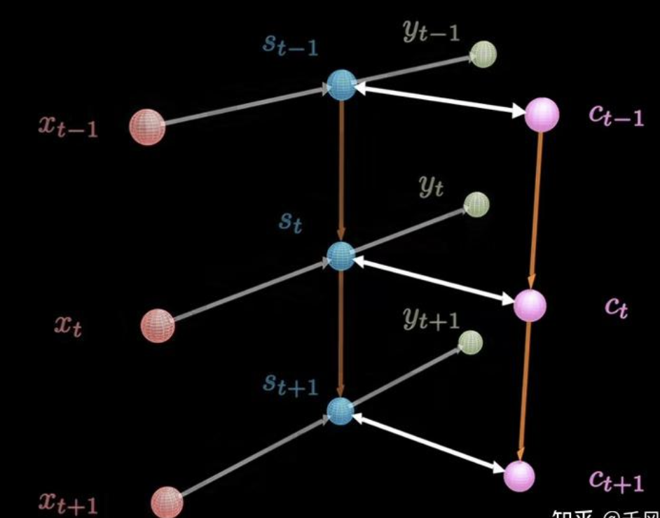
- 输入门（Input Gate）：决定当前输入的信息是否更新到记忆单元中。输入门包含两个部分：一个是 Sigmoid 激活函数，决定哪些信息要更新；另一个是 tanh 激活函数，生成新的候选值（可能被加入到记忆单元中）。

i_t 控制新信息写入多少，\tilde c_t 是候选细胞状态。令 u_t=[h_{t-1};x_t] 为前一隐藏状态和当前输入的拼接：
- 遗忘门 f_t=\sigma(W_f u_t+b_f) 决定旧状态各分量保留的比例。分量越接近 0，遗忘越多。

- 细胞状态更新：旧状态经遗忘门保留一部分，再加入输入门允许写入的候选信息。

输出门决定细胞状态中有多少信息作为当前隐藏状态输出：
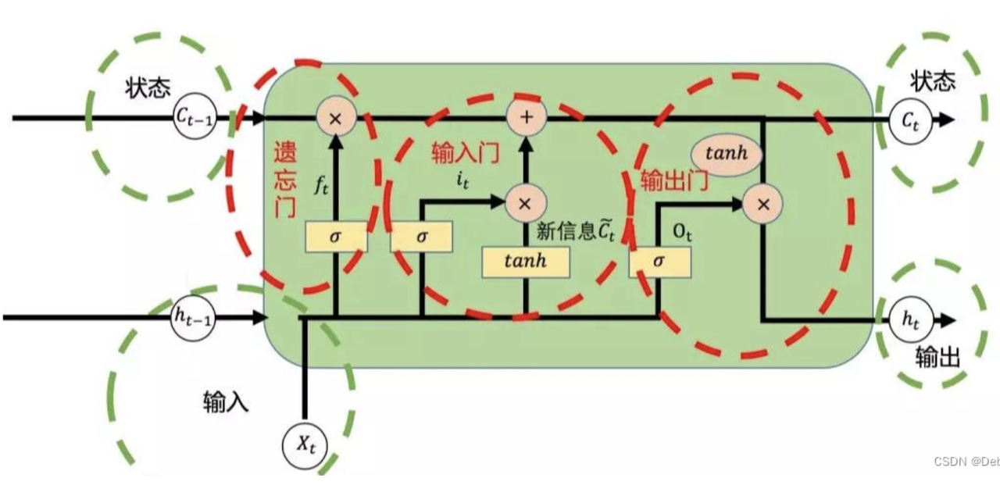

图神经网络
图的表示
在图神经网络中，常见的表示方法有邻接矩阵、度矩阵、拉普拉斯矩阵等。
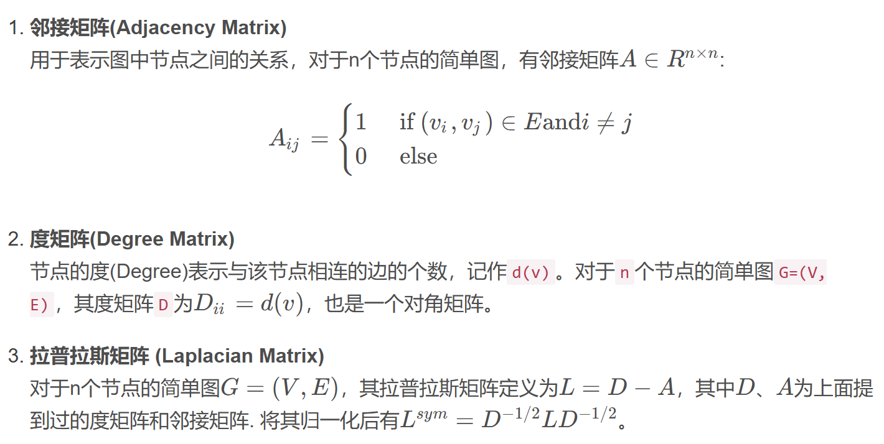
图神经网络 GNN
图卷积网络 GCN
本节待补。
GraphSAGE 架构
本节待补。
图注意力网络 GAT
本节待补。
注意力机制与Transformer架构
seq2seq框架
注意力机制
起初的注意力机制将注意力汇聚的输出计算成为值的加权和。通过Query与Key的注意力汇聚（即，给定一个 Query，计算Query与Key的相关性，然后根据Query与Key的相关性去和对应的Value进行相乘）实现对Value的注意力权重分配，生成最终的输出结果。
这里面有几个核心的概念：
假设你在读一段话，要理解“it”指代什么，你会在脑中去“检索”前文中哪个词最相关。
- Query: 就是it这个单词
- key: 若干候选项
- values: 每个候选项携带的信息（values）就是它们的语义内容
两种注意力架构：
- 加性注意力（Additive Attention）
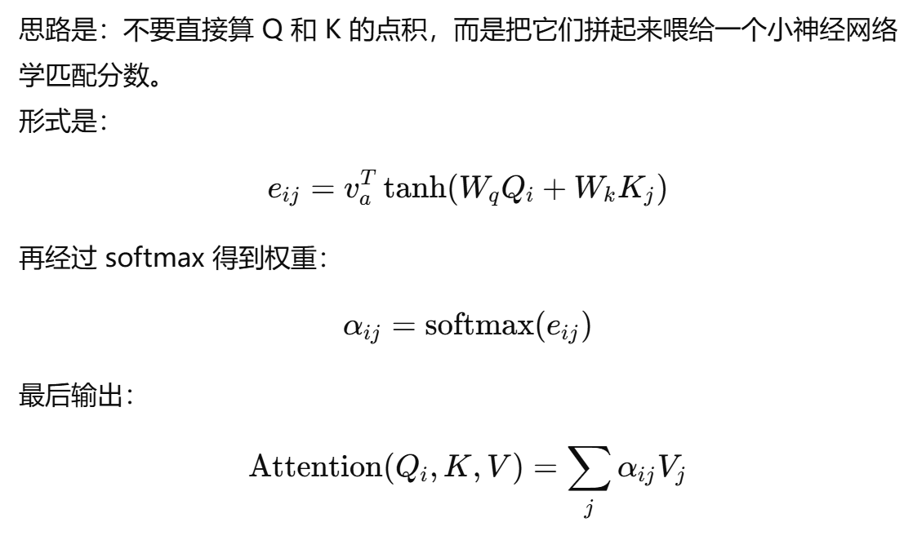
- 缩放点积注意力（Transformer）
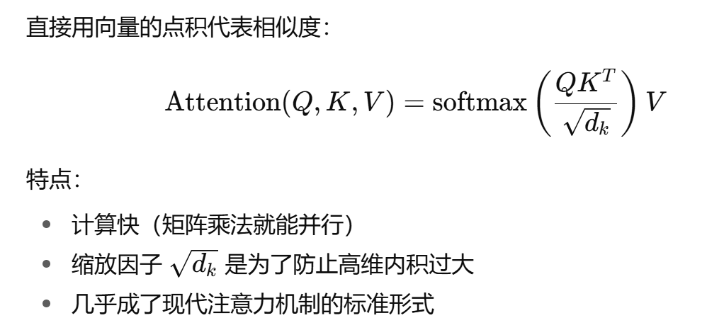
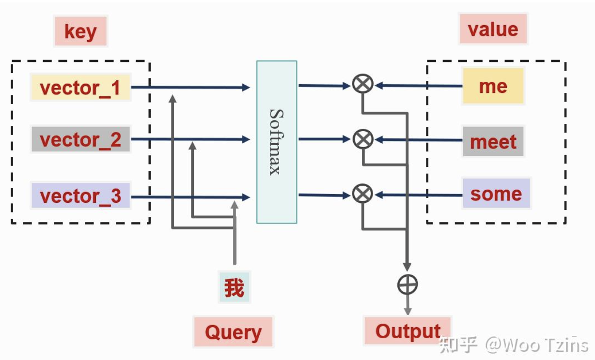
用Pytorch实现加性注意力
class Attention(nn.Module):
def __init__(self, n_hidden_enc, n_hidden_dec):
super().__init__()
self.h_hidden_enc = n_hidden_enc # encoder隐藏层维度， 例如为2
self.h_hidden_dec = n_hidden_dec # decoder隐藏层维度， 例如为3
self.W = nn.Linear(2*n_hidden_enc + n_hidden_dec, n_hidden_dec, bias=False) # 线性层：输入为双向RNN+拼接 -> 输出为decoder隐藏层维度 (7, 3)
self.V = nn.Parameter(torch.rand(n_hidden_dec)) # 初始化参数
def forward(self, hidden_dec, last_layer_enc):
'''last_layer_enc指的是seq2seq框架中最后一层的输出, shape为[b, src_seq_len, n_hidden_enc]'''
batch_size = last_layer_enc.size(0)
src_seq_len = last_layer_enc.size(1)
hidden_dec = hidden_dec[:, -1, :].unsqueeze(1).repeat(1, src_seq_len, 1) # 在dim1上复制len次，可以理解为只取每个batch的最后一个
tanh_W_s_h = torch.tanh(self.W(torch.cat((hidden_dec, last_layer_enc), dim=2))) # 把encoder和decoder横向拼接，用tanh激活 size [b, seq_len, n_hidden_dec]
tanh_W_s_h = tanh_W_s_h.permute(0, 2, 1) # permute为维度调换， [b, n_hidde_dec, seq_len]
V = self.V.repeat(batch_size, 1).unsqueeze(1) #[b, 1, n_hidden_dec], 把[n_hidden_dec]先复制b次，再在第一个维度展开
e = torch.bmm(V, tanh_W_s_h).squeeze(1) #bmm为批量矩阵乘法，shape [b, seq_len]
att_weights = F.softmax(e, dim=1) #[b, src_seq_len]
return att_weights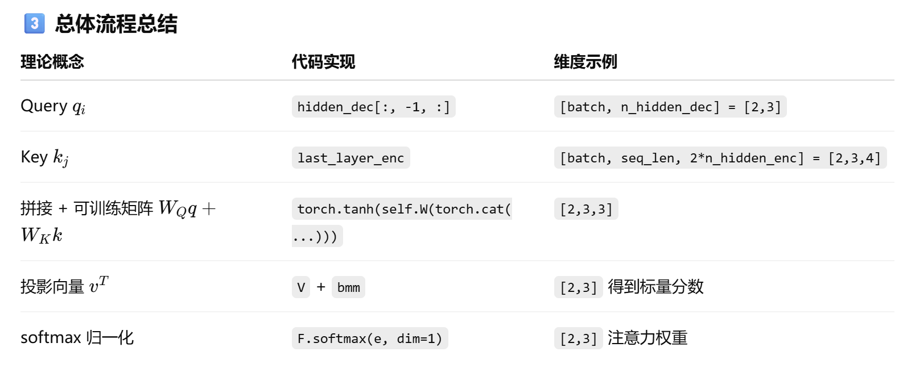
自注意力机制
注意力机制的思想最早来自于 seq2seq + attention 框架（比如机器翻译），它的目标是：
让 decoder 在生成每个词时，都能自动挑选 encoder 输出里哪些信息更重要。
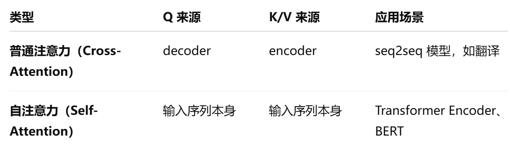
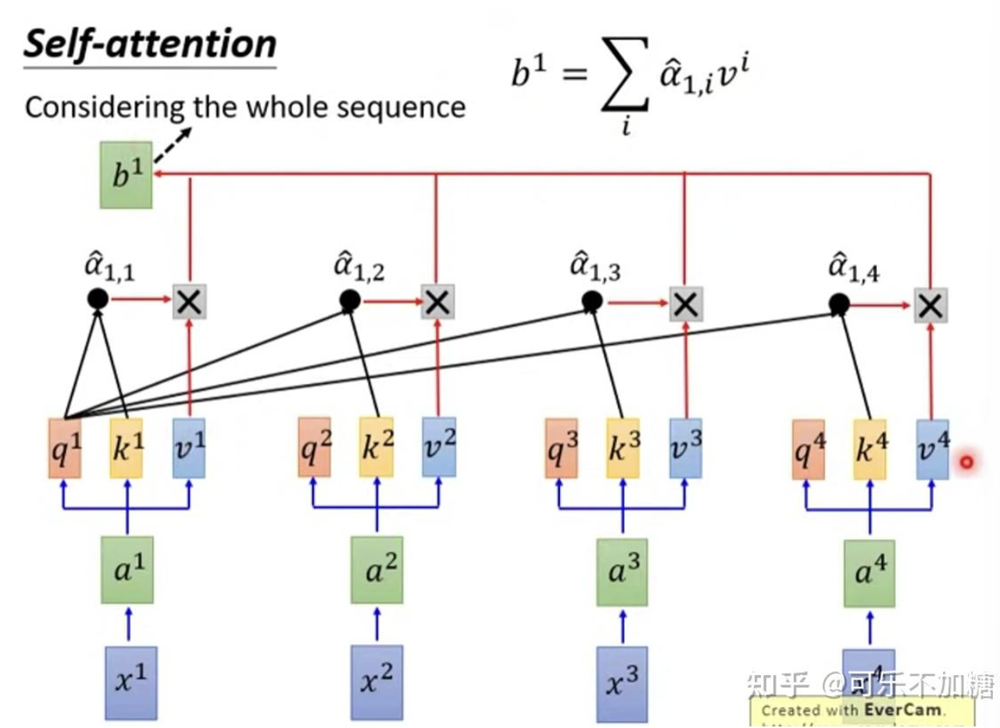
以下以计算第一个位置的输出 b^{(1)} 为例。
1. Embedding：
用 W_e 得到嵌入，再分别投影到查询、键和值。三组投影矩阵各自跨位置共享，但彼此不同。
2. qk操作
用第一个位置的查询与每个键计算缩放点积，再沿所有键做 softmax。d_k 是键向量的维度。
3. v操作
用归一化的权重计算值向量的加权和：